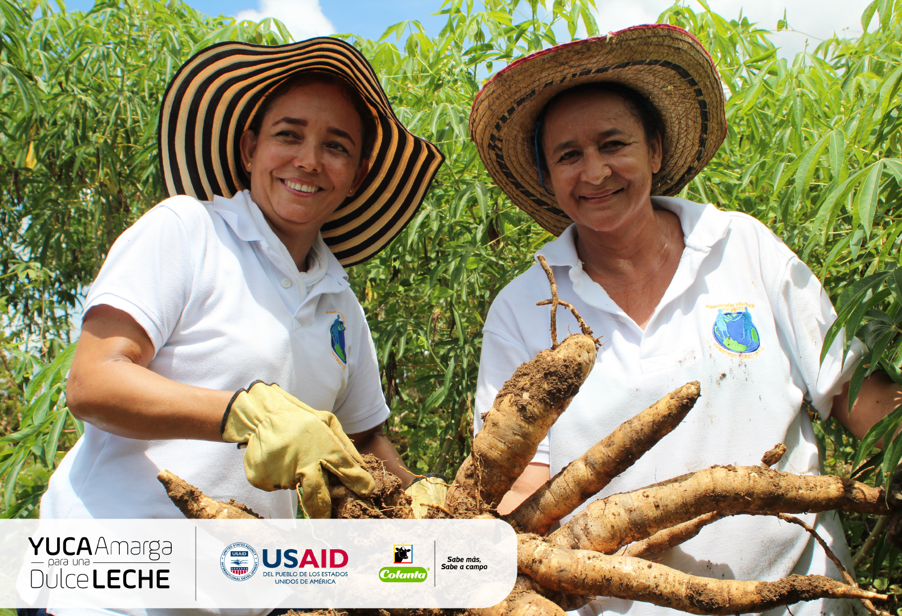

Yuca Amarga para una Dulce Leche es una Alianza entre USAID/Colombia, COLANTA, la Corporación Clayuca, la Red Nudo de Paramillo y la Fundación Universitaria Católica del Norte que busca aumentar la competitividad y mejorar la calidad de vida de pequeños y medianos productores en zonas afectadas por el conflicto armado en Antioquía, Bolívar, Córdoba, Sucre y Cesar.
Te invitamos a ampliar tus conocimientos sobre las metas y resultados esperados de esta Alianza consultando este documento y a inspirarte en el siguiente video para diseñar propuestas de colaboración con el sector privado para contribuir al desarrollo incluyente y sostenible: